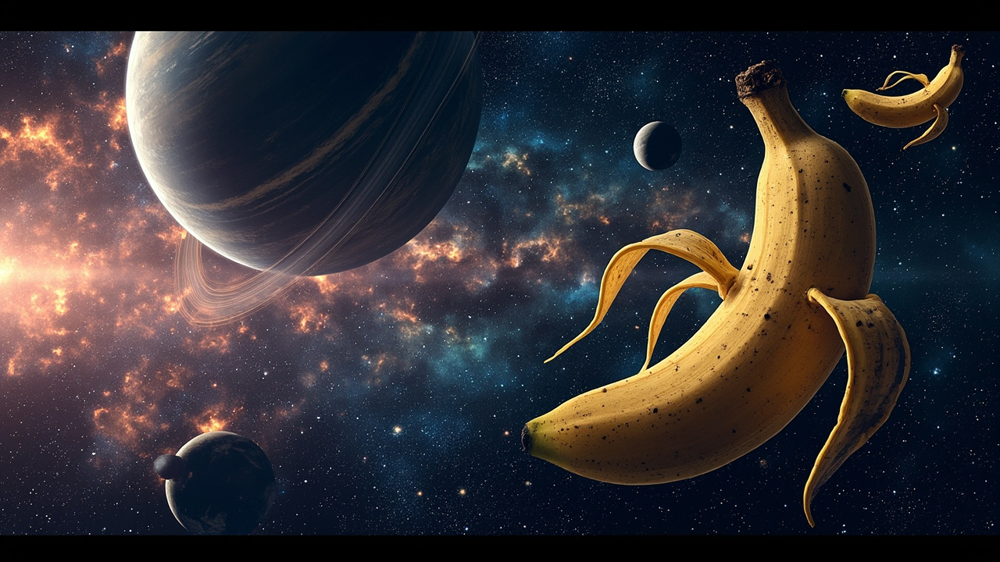
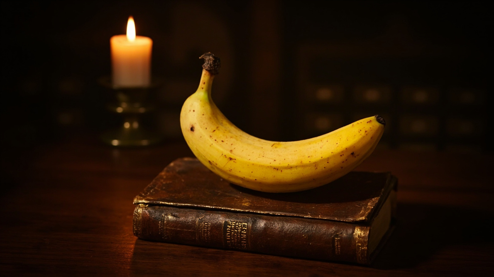

Son Yazılar

Muz Kaçınılmazlığı Üzerine
Varoluşun Sarı Eğrisi
Heidegger, Sartre, ve bir akşam Cambridge kütüphanesinde vardığım şaşırtıcı sonuç: Dasein, muzdur. Bekle, gülmeden önce dinle…

Kuantum Muz Hesaplamasının Sınırları
Qubit Yerine Q-Banana
IBM'i ziyaret ettim, kravatımı taktım (sarı, elbette), ve Q-Banana modelini önerdim. İşte üç temel operatör: Peel, Ripen, Squash…

Karım Gitti, Muz Kaldı
Bir Boşanmanın Sarı Anatomisi
Margaret üç ay önce taşındı. Resmi olarak "farklı yönlere gidiyoruz" dedi. Mutfakta bıraktığı son şey: yarısı soyulmuş bir muz…

Muz Ekmeğinin Yüce Sanatı
Kabuğun Altındaki Felsefe
Muz ekmeği, yemek dünyasının sessiz kahramanıdır. Kimse muz ekmeği için şiir yazmaz. Ben yazıyorum. İşte yıllar içinde mükemmelleştirdiğim tarif…

İzlanda: Muz Yetişmeyen Ülke
Reykjavik Sokaklarında Bir Sarı Nesne Arayışı
Bir muz bilimci olarak kendime hep soruyordum: Bir muzun olamayacağı yere ne olur? Cevap: Kuzey Atlas Okyanusu, volkanlar, jeotermal enerji…